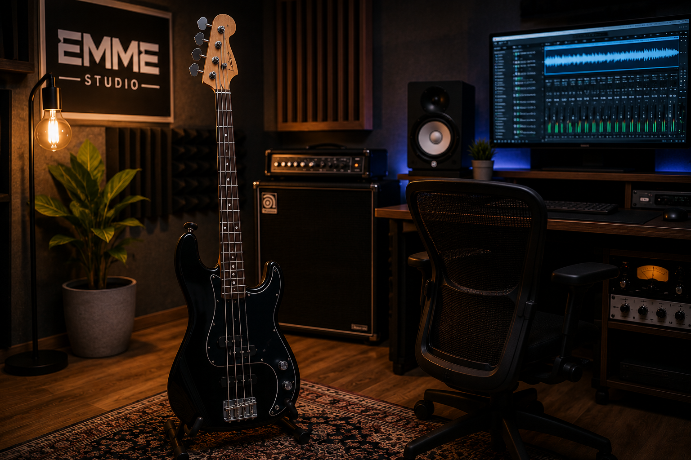

Il tuo percorso musicale
Il corso di Basso Elettrico di EMME STUDIO è pensato per accompagnare ogni studente nello sviluppo della propria identità musicale, indipendentemente dal livello di partenza.
Il percorso è aperto a principianti assoluti, musicisti intermedi e studenti avanzati, offrendo lezioni personalizzate basate sugli obiettivi e sul genere musicale preferito.
Durante il corso verranno affrontati: tecnica della mano destra e sinistra, timing, groove, accompagnamento, studio del suono, armonia moderna, improvvisazione e ruolo del basso all’interno della band e delle produzioni moderne.
Gli allievi potranno sviluppare precisione ritmica, consapevolezza musicale e capacità espressive, lavorando sia sul repertorio sia sulla preparazione live e in studio.